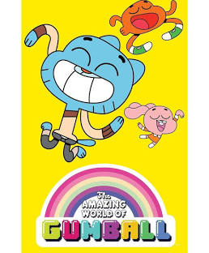

Character Gallery is a small showcase site built for a CSC-340 assignment, bringing together some of my favorite cartoon and animated characters in one place. I chose Gumball Waterson as the site's featured character because The Amazing World of Gumball was my favorite childhood cartoon, and his chaotic, colorful energy felt like the perfect fit for a project about celebrating cartoon characters.
For the design, I used an "Elmore style" template as inspiration, since it echoes the same bright, playful vibe as Gumball's world. The rest of the site follows that theme: a dark navigation bar with a purple accent color ties every page together, character cards use a clean grid layout so visitors can browse at a glance, and the details page goes deeper into one character's backstory, abilities, and personality for anyone who wants to learn more.
This site is static and does not have a working backend, so the search bar and "Add a Character" form are included to demonstrate the intended user experience rather than to function fully. Future versions could connect these features to a real database so users could search and submit their own characters.